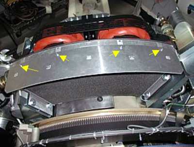
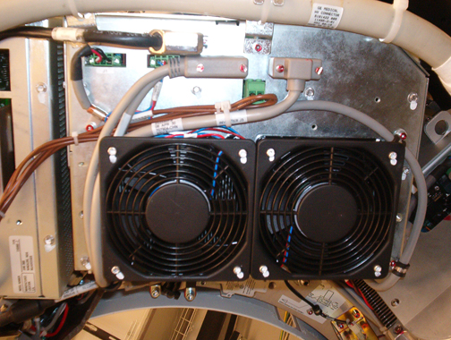

Operating Documentation
Direction 5307452-8EN, Rev# 4
Discovery CT750 HD Service Methods - Adv
Operating Documentation |
| Last Revised | 22 October 2008 |
Ensure that the Axial drive enable switch is turned OFF at the gantry service switch panel.
Rotate the gantry until the Tube Heat Exchanger assembly is within serviceable reach.
Engage the gantry rotation lock.
Remove the four screws on the top of the assembly and clean the filters (see Illustration 1).
Illustration 1: Screw Locations

Inspect the radiator and clean, if necessary.
Inspect the fans, remove the shroud, and clean, if necessary.
Reassemble the filters and fan shroud. When reinstalling the filter, make sure the lower edge of the filter engages the tabs on the heat exchanger frame.
Inspect the inverter fans for accumulated dirt (see Illustration 2).
Vacuum any dust that has accumulated on the inverter fan grills, if necessary.
Illustration 2: JEDI Inverter Fans

The pump is a consumable item that is expected to fail before the system end-of-life. If a pump fails, it causes the tube to overheat and fail. It is recommended to replace the heat exchanger pump every three years.
Check the date the pump was installed. (It should be marked on the pump if it was replaced, otherwise, it is the date the system was installed.)
If the pump is more than three years old, replace the pump.
| NOTE: | Scheduled pump replacement is NOT applicable for pump models with flow sensor circuit boards. (Pumps with flow sensor circuit boards are not available at the time of this initial PM release.) |
If the pump is less than three years old, turn on the 120 V switch at the gantry service switch panel and listen for excessive noise coming from the pump. If the bearing of the pump appears to be failing, replace the pump.
| NOTE: | The pump should not be replaced if it is less than three years old and there are no noise level concerns. |
On the PM Report Form, record the later of:
the manufacturing date of the gantry
the date the pump was last replaced
| NOTE: | The date of the pump replacement should be marked on the pump in permanent marker. |
For pump replacement procedures, see Heat Exchanger Pump Replacement.